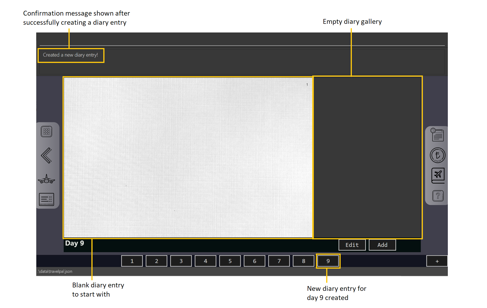
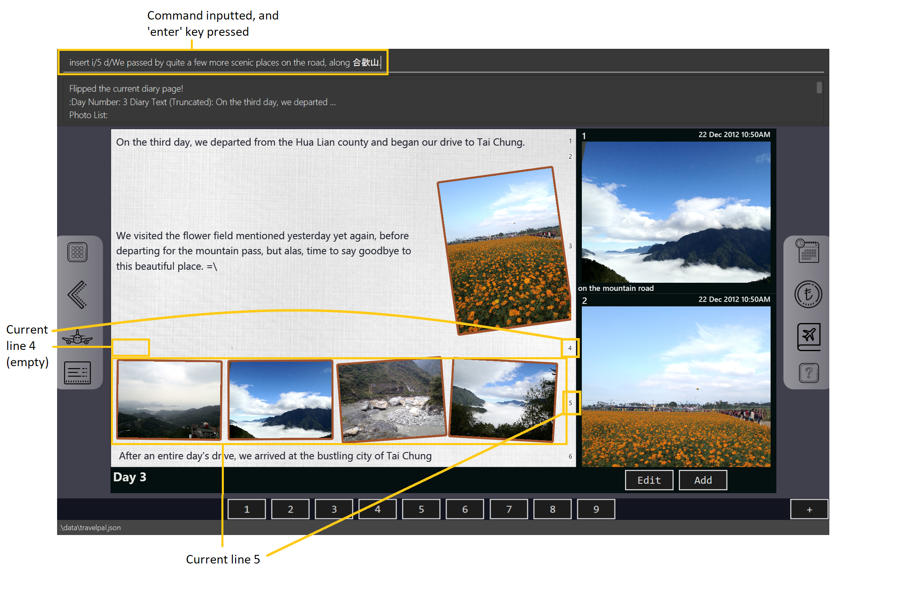

By: Team 11-4 Since: In Development Licence: None
1. Introduction
Welcome to the user guide for TravelPal!
What is TravelPal? First and foremost, it is a cross-platform desktop application for those who love to plan and micromanage their travels. It includes various features that can make trip planning hassle free, such as an itinerary, inventory, bookings and expense manager.
During the trip, there is also an inbuilt diary application that allows you to record details of your travels, so that you can review them later or share them with loved ones!
In addition, we have made the Command Line Interface (CLI) the primary preferred form of input, but alternative Graphical User Interface (GUI) inputs are also supported for most operations.
Jump to the Section 2, “Quick Start” to get started!
2. Quick Start
-
Ensure you have Java
11or above installed in your Computer. -
Download the latest
TravelPal.jarhere. -
Copy the file to the folder you want to use as the home folder for TravelPal.
-
Double-click the file to start the app. The GUI should appear in a few seconds.

-
Type the command in the command box and press Enter to execute it.
e.g. typinghelpand pressing Enter will open the help window. -
Try the
createcommand! This brings you to the trip creation / editing screen. -
Refer to Section 3.2.4, “Trip setup” next to learn how to create a new trip..
3. Features
General Command tips
-
Most commands are in the form:
<command word> <argumentWithoutPrefix> <argument1WithPrefix> <argument2WithPrefix> <argumentNWithPrefix> -
<command word>is case insensitive, so typing it in any combination of UPPER_CASE or lower_case will work. -
Leading and trailing white spaces in the inputted command are ignored.
-
<argumentNWithPrefixes>consists of two parts, namely aprefix/followed immediately by anargument-
prefix/s are some combination of letters, followed by a/character, and are case sensitive
-
3.1. Trip manager
The Trip Manager page is the main starting ground of the application. Here, you can view and enter the trips you have created.
If you are using TravelPal for the first time, you will see a blank page, to create a new trip, please follow the instruction in Section 3.2.4, “Trip setup”.
After a trip is successfully added, information about the trip is shown in a trip card as shown below.

On the Trip Manager page, the following command are available:
-
create: creates a new trip, this command brings up the trip setup user interface. -
delete <index of trip>: deletes the trip with the specified index and all data associated with it. -
goto <index of trip>: enters the main page of a trip with the specified index.
3.2. Itinerary
3.2.1. Introduction
Itinerary is a series of features that allows the user to manage and view their Trips. The 2 main aspects that Itinerary covers are :
-
Itinerary Management : How to access information about each trip?
-
Itinerary Administration : How to edit information about each trip?
Itinerary provides an intuitive and efficient way to achieve both goals.
3.2.2. Basic Structure Overview
The structure of Itinerary is modelled after that of a regular travel itinerary. The following gives the basic understanding of how TravelPal for better understanding of further sections:
-
Trip: Each Trip is divided into Days which are automatically generated upon creating a Trip
-
Day: Each Day consists of several Events. Events are created and editable by the user.
-
Event: Events are the smallest unit of planning in TravelPal
| Trip/Day/Events created by you should not clash with another Trip/Day/Event of the same type |
With a basic understanding of how the basic structure of Itinerary is like, you are now ready to use the user interface!
3.2.3. Itinerary User Interface Overview
Itinerary consists of 5 pages:
-
Itinerary Page: Displays basic information of your Trip
-
Days Page: Displays the Days in your selected Trip
-
Events Page: Displays the Events in your selected Day
-
Edit Day Page: Displays a form where users can create/edit their Day
-
Edit Event Page: Displays a form where users can create/edit their Event
The accessibility between pages is intuitively based on the specific user’s focus. For example, in the figure above, each vertical column represents a user’s focus. From column 1 - 4, the user’s focus switches from each Trip → Day → Event.
| The commands related to each page in Itinerary are separated and the same command produces different results on different pages. |
Itinerary Page
The Itinerary page is the home page of your Trip. From this page, you can access your Days and details for each Day. Below is layout of the user interface:

| You can access other pages from the Itinerary Page using te navigation feature(Section 3.2.8, “How to navigate”). |
Days Page
The Days page is a view of the days in your trip. It consists of a grid of day thumbnails arranged based on chronological order (earliest on the top left to the latest on the bottom right). Below is the layout of the the days page:

Each day thumbnail (refer to Figure 4) contains basic information of your day and an edit button which allows you to edit that specific day (refer to [day_setup]). Below is a layout of the contents in a day thumbnail:

Events Page
The Events page is a view of the events in your trip. It consists of a list of event cards (see Figure 6.) arranged from earliest to latest in chronological order (earliest on top and latest below). Below is the layout of the events page:
Each card contains the basic details of each event. You can execute show command to display details of the event (refer to Section 3.2.7, “Showing Event Details”). The layout of the event card is as shown.
| The index of the event card is used to access its contents for any command involving events (e.g. Section 3.2.5, “Event Setup”, Section 3.2.6, “Deleting an Trip/Event”) |
3.2.4. Trip setup
Trip setup is the first step in configuring a new/existing trip! This requires you to be at the Trip Manager page (the landing page).
Step 1: Now you can enter the command create or edit <index> to create a new trip or edit an existing trip.
Upon commands to create or edit a specified trip from the Trip Manager, you will be directed to a page where they can edit the necessary details to create a new trip. This page will contain a form with 6 fields (optional fields are marked by italics):
-
Name: Name of the trip
-
Constraints: Names should only contain up to 40 alphanumeric characters and spaces, and it should not be blank
-
-
Start Date: Starting date of the trip
-
Constraints: Start date should be in the DD-MM-YY format
-
-
End Date
-
Constraints: End date should be in the DD-MM-YY format
-
-
Total Budget
-
Constraints: Budget can take any positive numerical value with no more than 2 decimal places, and it should not be blank
-
-
Destination
-
Constraints: Destination can take any values, and it should not be blank
-
-
Photo
-
Constraints: The image path specified should be valid, and must point to an existing file. Otherwise, a default image will be used.
-
| The last field Photo is an optional field, a default image will be used if the user does not submit any image. |
Step 2:
-
If the
createcommand was executed, you will be displayed an empty form with no details filled in. You will see the following page:
create command generates empty fields-
If the
editcommand was executed, you will be displayed a from with details previously filled in instead:

edit command generates fields from your previously saved dataStep 3: Now that you are on the edit page, to edit a specific field, execute the following command: edit <prefix>/<value> <prefix>/<value> …. There are 6 different prefixes. The 6 prefixes refer to editing each fields as follows:
-
Name :
n/ -
Start Date :
ds/ -
End Date :
de/ -
Total Budget :
b/ -
Destination :
l/ -
Photo File Path :
fp/
You can execute fc/ with fp/ to open a file dialog to choose an image rather than type in absoulute path of the image.
e.g. edit fp/ fc/
|
Below is an example execution of changing the name of an existing trip to "Small Trip":
-
Begin at the edit trip screen, the original name of the trip is the same as before.
-
Enter the command
edit n/Small Tripinto the command box and press enter to execute.
edit n/Small Trip-
The name of the trip is now "Small Trip"!
Step 4: Having completed editing the the form, you can submit it by executing the done command or the cancel command which will confirm your edit or discard it respectively.
You have successfully created/edited a trip!
3.2.5. Event Setup
Creating/editing an event is similar to creating/editing a trip (directly above). To do so you have to begin on the events page displaying the list of events of a certain day (Fig. 13).
Step 1: Now you can enter the create or edit <index> command to create a new trip for edit an existing one. The <index> to enter can be referenced from the list of events being displayed on each card. (Refer to Section 3.2.3.3, “Events Page” or Fig.14 below)
Upon execution of either command on the events page, you will be directed to a page where editing the necessary details to create a new event is possible. This page contains a form with 4 necessary fields and 3 optional fields (optional fields are marked with italics).
-
Name: Name of the event
-
Constraints: Names should only contain up to 40 alphanumeric characters and spaces, and it should not be blank
-
-
Start Time
-
Constraints: Time should be in HHmm format
-
-
End Time
-
Constraints: Time should be in HHmm format
-
-
Destination
-
Constraints: Location can take any values, and it should not be blank
-
-
Total Budget
-
Constraints: Budget can take any positive numerical value with no more than 2 decimal places, and it should not be blank
-
-
Description
-
Constraints: Description can take any values, and can be left blank
-
-
Inventory Items Needed
-
Constraints: You can add or delete multiple inventory items (which will be displayed on the list below this field), or you can leave the the field blank
-
| The Total Budget and Inventory Items Needed field is optional and can be left blank |
Step 2:
-
If the
createcommand was executed, you will be displayed an empty form with details to be filled in by you for the first time. The empty form looks like this:
-
If the
edit <index>command was executed, you will be displayed a form filled with details that you have previously entered. An example is shown below (Fig. 16):
Step 3: Now on the edit events page, to edit a specific field, execute the following command: edit <prefix>/<value> <prefix>/value> …. There are 8 different prefixes to edit one of the 7 fields displayed. The 8 prefixes are as follows:
-
Name :
n/ -
Start Time :
ds/ -
End Time :
de/ -
Total Budget :
b/ -
Destination :
l/ -
Description :
d/ -
Add an inventory item to the event’s inventory list:
inv/<name of inventory item to add> -
Delete an inventory item from the event’s inventory list:
dinv/<index number of item to delete>
| To delete an item from the inventory list you can also select the item’s row and press backspace |
Below is an example of changing the destination of an existing event to "Hotel 89":
-
You begin at the edit event screen, the text in the name field reflects the original name of the event.
-
Enter the command
edit l/Hotel 89into the command box and press enter to execute
-
You should now see the text in the field Destination change to "Hotel 89" to reflect the changes made to the event.
Step 4: Now you should have completed all the necessary fields and are ready to finish the edit. You can execute the done or cancel commands to either confirm the edit or discard it. Both commands will redirect you back to the events page.
Congratulations, you have created/edited an event!
3.2.6. Deleting an Trip/Event
Deleting a Trip/Event is executed in exactly the same way as each other. You first have to begin on the Trip Page//Events Page respectively. Each of the pages will show a list of trips/events each labelled by an index. Below are 3 different list format elements and the indication where you can find the index.
| You should have at least 1 trip/event in your lists or all delete commands will be invalid |
Step 1: Enter the command delete <index> into the command box where the index corresponds to the trip/day/event you wish to delete. Press enter to execute the command.
Step 2: You should now see that trip/day/event that you deleted has disappeared from the list and the indexes have been reassigned in chronological order:

delete 1Congratulations, you have deleted a trip/day/event!
3.2.7. Showing Event Details
The details of each event are displayed on the right half the Events Page. You can access the events page by using the navigation feature (Section 3.2.8, “How to navigate”) found on most pages.
Upon accessing the events page, the information panel on the right should be empty except the prompt "Click on an event to show details here!". The left panel holds the list of events in the particular day in chronological order.
To show the details of an event, execute the command show <index> in the command box. You should use the index on the event card in the command.
After executing the command, you should see the details of the event show up on the information panel. Below is an example execution of the process to show the information of the event "Breakfast:
-
Starting from the events page, type the command
show 1into the command box and press enter to execute.
-
Congratulations! you should see the information on the right panel pertaining to the event the "Breakfast" event just selected.
3.2.8. How to navigate
The main form of navigation is by using the navigation bars and the commands that are available on every page they are on. The bars appear like this:
Each icon on the bar refers to a specific page in the application that the current page can go to. You can access these pages by simply clicking them or executing the following commands.
-
Trip Manager:
home -
Itinerary :
itinerary -
Days Page:
days -
Diary :
diary -
Inventory :
inventory -
Expense Manager :
expense -
Bookings Manager :
bookings
| Pages that do not contain a navigation bar cannot use the navigation commands above. |
Below is an example of navigating from the itinerary page to the days page: - Begin on the itinerary page
-
Since the page we are trying to reach is the days page, type the command
daysinto the command box.
-
Congratulations you should now see the Days Page

3.3. Expense Manager
3.3.1. Introduction
TravelPal’s Expense Manager is an integrated expense planning and management system. It keeps track all the expenses generated in your trip, and provides an intuitive overview of daily and total expenses and budgets. Gui alternatives are available for executing the same operations as command line input.
This section of the user guide explains how to view and manage your expenses using Expense Manager.
3.3.2. User Interface Overview
Shown below is the landing page of the Expense Manager:

To toggle the display of expenses between list view and days view, use the command showdays or showlist. Alternatively,
you may click on the toggle button on the page.
The following screenshot is the days view of the Expense Manager:

Expenses are connected to bookings/events to automatically update the current known expense for any date/trip/event. There are two types of expense:
-
Planned expense (auto-generated from event)
-
Miscellaneous expense (can be created and deleted)
3.3.3. Commands
On the Expense Manager page, the following command are available:
-
create: creates a expense, can also be accessed by clicking theAdd Expensebutton. -
edit <index of expense>: edit an expense, this command bring up the expense setup page. -
delete <index of expense>: delete an expense, note that only miscellaneous expenses can be deleted. -
showdays: enter the days view of expense manager, the expenses will be grouped according to the days they belong to. -
showlist: enter the list view of expense manager, the expenses will be shown in one list. -
goto <index of expense>: go to the event page containing the event associated with this expense. -
sort name: sort the expenses according to the name lexicographically. Enter the command again to sort in reverse order. -
sort amount: sort the expenses according to the amount of expense in ascending order. Enter the command again to sort in descending order. -
currency: enter the Currency page of TravelPal, can also be accessed by clicking on the Edit Currency button
delete command can only be used on miscellaneous expense, however, you may delete the event associated with a planned expense, which will
delete the expense as well. goto command is only for planned expense associated with an event.
|
3.3.4. Expense Setup
Expense Setup creates/edits properties of a specified expense.
To access the Expense Setup page, use create or edit <index of expense> command on Expense Manager page. Shown below is an screenshot of the page:

It is necessary for expense to contain a name, an amount and a day number.
The following commands are available on Expense Setup page.
-
edit <prefix>/<value> …: edit the field of the expense to be created/edited. -
done: confirm and commit the changes, go back to the expense manager page. -
cancel: go back to the expense manager page without committing the changes.
The prefixes refer to editing each fields as follows:
-
n/Name of the expense -
b/The amount of expense, in Singapore dollars. -
dn/The day number the expense belongs to.
For planned expense linked to an event, the name and day number fields are not editable. However, you may
edit the name of the corresponding event, this will also update the name of the planned expenses.
|
Example Usage for edit command:
To add an expense with the name Miscellaneous Expenses of $10.5 SGD to day 2, use the following command:
edit n/Miscellaneous Expenses b/10.5 dn/2
3.4. Currency
3.4.1. Introduction
On Currency page, you can add and select currencies with customised currency name, symbol and exchange rate. When a currency is selected, all the monetary valued will be displayed in that currency
3.4.2. User Interface Overview
Shown below is a screenshot of the Currency page:

The left half of the Currency Manager page consists of editable text fields for creating a new currency.
Under the
Symbol of Currency section, you can find preset currency symbols, in which the most commonly used currency symbols are indexed. You can select a currency
by entering the index in place of the actual symbol, or just by clicking on the button.
You can also manually input other currency symbols.
On the right hand side of the page, the customised currencies are listed. Singapore Dollar(SGD) is pre-defined as the base currency. You may select or delete a customised currency.
3.4.3. Commands
The following commands are available on Currency Manager page:
-
select <index of currency>: select the currency with the specified index as the currency in use. -
delete <index of currency>: select the currency with the specified index, note that the default Singapore dollar cannot be deleted. -
edit <prefix>/<value> …: edit the fields of a new currency to be created. -
add: confirm and commit the changes, the newly added currency will be chosen as the currency in use, displayed in the currency list -
return: return to the expense manager.
the <value> for editing the currency symbol can either be an integer representing the index of the preset currencies, or
or a non-numerical string with no more than 3 characters.
|
The prefixes refer to editing each fields as follows:
-
n/name of the currency -
s/symbol of currency, -
r/exchange rate of the currency, using Singapore dollar as base for comparison.
| Singapore Dollar (SGD) is used as the default currency, it cannot be deleted. |
Example Usage for edit command:
To add an currency with name USD, symbol $ (pre-set symbol with index 1), and an exchange rate of 1 SGD : 0.74 USD, use the following command:
edit n/USD s/1 r/0.74
3.5. Booking
3.5.1. Introduction
Welcome to the Booking feature of TravelPal!
The Booking feature is one of the main features that allows you to add all the bookings pertaining to your trip in one single place with a user defined name, contact and the expense of the booking. You can easily add, edit and cancel bookings during creation of any booking.
Furthermore, for almost every command, there is a GUI alternative using various buttons to execute the same operations.
The following section of the User Guide explains how to use the Booking feature of TravelPal.
3.5.2. Booking User Interface Overview
This section of the user guide explains how to view and manage your bookings using Booking Manager.
How to reach the Landing Page of Booking Manager
When inside a trip, the command bookings will bring you to the landing page (this command works from all pages of the
trip).

Shown below is the landing page of the Booking Manager.

Bookings serve to assimilate all the activities which you have planned throughout your trip in a single convenient place Bookings are connected to your overall expenses and budget of the travel, activities or accommodation.
3.5.3. Commands
On the Booking Manager page, the following commands are available:
-
create: creates a new booking; can also be accessed by clicking the buttonAdd Bookingfor a more user-friendly experience. -
edit <index of the booking>: edits an indexed booking, if the index is valid; this command brings up the booking setup page. -
delete <index of the booking>: deletes an indexed booking, if the index is valid.
valid: valid index implies that the index is lesser than or equal to the number of items so far created, i.e., you can edit or delete only an existing Booking. invalid index will not execute and show an error message

3.5.4. Booking Setup
Booking setup creates/edits properties of a specified booking as per the choice of the user.
To access the Booking Setup page, use create or edit <index of the booking> command on Booking Manager page.
It is necessary for a booking to have a:
-
Name: can be of any length; it can also include short description
-
Contact: a varied input field which can store alphanumeric characters to satisfy contact number, email address or referencing words.
-
Budget: all the bookings have a pre-assigned expenditure involved with it; it should be a cost estimated upto two decimal places (automatically stored in SGD)
The following commands are available on Booking Setup page.
-
edit <prefix>/<value> …: edit the respective field of the booking to be created/edited. -
done: confirm and save the changes, and go back to the booking manager page. -
cancel: go back to the booking manager page without saving the changes.
The prefix in edit <prefix>/<value> … refers to editing each fields as follows:
-
n/Name of the booking -
c/Contact details of the booking -
b/The amount of expenditure, in Singaporean dollars.
Example Usage for create command:
To add a booking SampleBooking with contact details 98989898, DisneyLand with an expenditure of $80 SGD, use the following command:
edit n/SampleBooking c/98989898, DisneyLand b/80

create a Booking| If two bookings have the same information of Name, Contact and Budget, second will not be saved but the user can still make changes. The user can use sequential naming (Booking1, Booking2, ….) to differentiate between the two bookings. |
Example Usage for edit command:
To edit the previous created booking to with same name and contact details but with an expenditure of $100 SGD, use the following command:
edit b/100

edit of the name of a Booking
You can choose to edit any number of fields any number of times. You can also choose to cancel the editing or
creation of any booking at any time by typing cancel command or clicking the Cancel button.
|
After adding your Bookings, beforehand or on-the-go, Booking Manager looks like this:

3.6. Diary
3.6.1. Introduction
Welcome to the diary feature of TravelPal!
The diary allows you to key in various thoughts and add photos that tie to each day of the trip. It offers a selection of formatting choices for your text display, and has an additional gallery display to the right that allows you to take a glance at all your photos quickly.
Moreover, for almost every command, there are gui alternatives that allow you to execute the same operations.
The following section of the user guide explains how to use the diary.
3.6.2. Diary User Interface Overview
Shown below are the key elements of the diary page, while the gallery is in view.
There is an alternative mode of display (which will be touched on shortly, or see Section 3.6.3, “Diary Editor User Interface”),
that shows when you execute the editor command Section 3.6.5.9, “Showing the edit box” or click the Edit button.
|

Diary Entry Display Area
This is the main display area of your diary entry. It is able to display text, along with inline images, or just lines of images. The content is generated from the diary text of the entry (Section 3.6.4, “Diary Text”).
Gallery Display
The gallery allows you to browse through your stored photos. You can scroll the list simply with your mouse wheel.
Each image is displayed with a description (bottom left), a date taken (top right), both of which are user specifiable. There is also a photo index (top left), which is for use in various commands (see Section 3.6.4.2, “Displaying images”).
|
The image files of TravelPal are not copied to where your the TravelPal application file is. Instead, the absolute file path (see Section 5, “Glossary”) to the image file on your computer is stored! If you move or delete the original image on your system, then you will have to add the photo again, and a placeholder image will be shown in place of your image in TravelPal. |
Current Day Indicator
This is simply some helper text for you to know what day the diary entry you are currently viewing is tied to.
Diary Day Navigation Bar
This is the button equivalent of the flip command (Section 3.6.5.2, “Navigating to a diary entry”), and allows you to navigate between your
diary entries for different days by clicking on the respective buttons.
Gallery Button Bar
This smaller button bar is used for executing two other commands. Firstly, the editor (Section 3.6.5.9, “Showing the edit box”)
can be executed by clicking on the Edit button. Secondly, the addphoto command may be executed
(Section 3.6.5.3, “Adding a photo”) through Add button.
Add New Entry Button
Similarly, this button executes the create command through the user interface, as described in Section 3.6.5.1, “Creating a diary entry”.
3.6.3. Diary Editor User Interface
This is the screen that shows when the editor command (Section 3.6.5.9, “Showing the edit box”) is executed or the Edit button
is clicked, as mentioned in Section 3.6.2.5, “Gallery Button Bar”.
Components not highlighted in Figure 32, “Overview of diary user interface when the edit box is shown” below function the same way as mentioned in Section 3.6.2, “Diary User Interface Overview”.

Diary Edit Box
This is the text edit area that allows a convenient form of alternative input to commands for editing the Diary Entry. While you may feel that the special clauses "<images 2>" and "<images 5 1 3 4>" being used in the diagram above are rather unfamiliar, they are actually quite simple! (see Section 3.6.4, “Diary Text”).
For the command line input savvy users, you can use the F1 accelerator to quickly move your keyboard focus
back to the command line input!
|
Commit Edit Button
This is simply the button-equivalent of the done command (Section 3.6.5.10, “Committing your edits”), and allows you to commit the
changes you made (either through commands, or directly in the edit box) while the edit box was open.
3.6.4. Diary Text
The diary text, as you edit in the edit box (Section 3.6.3.1, “Diary Edit Box”), or edit through the commands described in [Diary Commands], are one and the same diary text! Hence, any commands you input to edit the text are reflected into the edit box automatically, and any edits you make to the edit box are considered by the commands.
The diary text consists of paragraphs, which are simply texts separated by new line / return characters.
| A paragraph of text need not span a minimum length, and can even be empty, as seen in the empty orange boxes in Figure 33, “Annotated highlights of paragraphs and their line numbers with alternating colours” |
Additionally, the diary text can use special clauses to display and format images, as described in Section 3.6.4.2, “Displaying images”.
Diary Text Line Numbering
Each paragraph of text as seen in the edit box or diary entry display (with optional accompanying image(s)) is tied to a specific line number. This line number is simply determined by the order of the text paragraphs as shown in Figure 33, “Annotated highlights of paragraphs and their line numbers with alternating colours”, from top to bottom.

This line number is used for several commands described in [Diary Commands].
| The line numbers are trivial if using the edit box to edit text, as text editing is done directly on the diary text. |
Displaying images
There are currently two main formats in which you can display images inside the diary entry display.
Both of them use simple clauses that require the numbering of the photo as displayed in the gallery.
<images> clause to display images as a mini horizontal gallery or inline imageAs a mini horizontal gallery of images.
-
Format: Use a diary text paragraph consisting of only the clause
<images number1 number2 numberN>, wherenumberNis the index of the photo as displayed in the gallery (Section 3.6.2.2, “Gallery Display”). -
Example:
<images 5 1 3 4>- displays a mini gallery with the images 1, 3 and 5 as shown in the gallery.
As an inline image with an accompanying paragraph of text.
-
Format: Use a diary text paragraph consisting of your desired text, along with the clause
<images numberN>, wherenumberNis the index of the photo as displayed in the gallery Section 3.6.2.2, “Gallery Display”. -
By default, the clause will place the image on the right, and the text on the left. You can include the
'left'word inside the<images left numberN>clause to reverse the order.
3.6.5. Diary Operations
The diary commands follow the same general format used by the rest of TravelPal (see [command_tips]).
Creating a diary entry
To start, you would want to create a new diary entry for a certain day. There are two options,
the former being the create command which offers slightly more flexibility.
Option 1: Using the create <dayN> command
-
Usage: Creates a new diary entry for any specified day number.
-
Arguments:
-
<dayN>- Positive integer nth day of the trip, which has not yet been created, and is less than or equal to the last day of your trip.
-
Option 2: Using the add entry button +
-
Usage: Creates a new diary entry for the day right after the latest day’s entry you currently have.
Example Usage
Scenario: You already have entries for days 1 up to 8, and you want to create a new entry for day 9.
-
Type in the
create 9command in the command line input, then press the 'enter' key, or simply click the+button as shown below.-
For the add entry button
+(Section 3.6.5.1.2, “Option 2: Using the add entry button+”), since the current latest day’s entry is day 8, it would create an entry for the day right after that, which is day 9. Figure 35. Example usage of creating a new diary entry for day 9
Figure 35. Example usage of creating a new diary entry for day 9
-
-
That’s it! the diary entry will be successfully created, and you will be brought to the new diary entry’s screen without having to navigate to it via Section 3.6.5.2, “Navigating to a diary entry” automatically.
Figure 36. Example result of post diary entry creation
Navigating to a diary entry
Next, say you wanted to view or edit a different day’s diary entry, be it during your trip, or long after the trip. There are also two options here to suit your needs, both offering the exact same functionality.
Option 1: Using the flip <dayN> command
-
Usage: Flips the diary to the diary entry of the day number specified.
-
Arguments:
-
<dayN>- Positive integer of the nth day’s diary entry to flip to.
-
Option 2: Using the diary entry navigation bar
-
Usage: Clicking the the button of with the day number of the diary entry in the navigation bar (Section 3.6.2.4, “Diary Day Navigation Bar”) will flip to the diary entry for that day.
Example Usage
Scenario: You are currently viewing the diary entry for day 9, which is empty, and you want to view the diary entry for day 3.
-
You should type in the
flip 3command in the command line input, then press the 'enter' key, or click the navigation button3for day 3, as highlighted below.Figure 37. Example usage of flipping the diary to day 3’s diary entry -
That’s all! You will be brought to the entry for day 3, as shown below. You should see a brief confirmation message in the command result box, and that the current day indicator will update accordingly (Section 3.6.2.3, “Current Day Indicator”).

Adding a photo
If you have just created a fresh diary entry, and you’re wondering where to go next, then you may want to start by adding your photos to display in the gallery (Section 3.6.2.2, “Gallery Display”).
There are 3 ways for you to add a photo, the last option being the least flexible but also the fastest!
In all options, the image file chosen should be of the file types .jpg, .jpeg, or .png.
|
Option 1: Using the addphoto command with the fp/ prefix
-
Usage: Typing in the command
addphoto fp/<file path> [d/<description>] [dts/<date taken>], with the arguments described below, will add the image located at thefile pathon your computer to the gallery. -
Arguments:
-
<file path>- Relative file path from the location of the TravelPal’s jar file, or an absolute file path. (see Section 5, “Glossary” for details of relative and absolute file paths) -
<description>(optional) - The description of the photo to be shown in the gallery, of maximum length 20. If unspecified, the file name is used instead, shortened to the maximum length. -
<date taken>(optional) - The date taken of the photo, of the formatd/M/yyyy HHmm. If unspecified, the last modified date of the file is used instead.
-
Example Usage
Scenario:
-
You are currently viewing an empty diary entry for day 1 and you want to add a new photo.
-
Also, you want to give the photo a custom description, but want to use the last modified date of the image file in your computer as the date taken for the photo.
-
Shown below is an example of the photo on your computer you want to add,
snowymountains.jpg, that is located in the same place as the TravelPal application.

-
You should type in the
addphoto fp/snowymountains.jpg d/picturesque mountainscommand in the command line input, and press the 'enter' key.-
Here, the relative
<file path>is simply the name of the file,snowymountains.jpg, since the image file is located in the same directory as the TravelPal application. Figure 40. Example usage of the
Figure 40. Example usage of theaddphotocommand with thefp/option
-
-
That’s it! The photo, with the specified description and last modified date will be added. You should see a brief confirmation message in the command result box.
-
Additionally, there will be a auto-generated photo numbering, for use as described in Section 3.6.4.2, “Displaying images”.
-

addphoto command with the fp/ optionOption 2: Using the addphoto command with the fc/ prefix
-
Usage: Typing in the command
addphoto fc/ [d/<description>] [dts/<date taken>], with the optional arguments described below, will open your system’s dialog to choose an image file. -
Arguments (optional):
-
<description>- The description of the photo to be shown in the gallery, of maximum length 20. If unspecified, the file name is used instead, shortened to the maximum length. -
<date taken>- The date taken of the photo, of the formatd/M/yyyy HHmm. If unspecified, the last modified date of the file is used instead.
-
Using both the fc/ and fp/ prefix will cause TravelPal to ignore the fp/ prefix!
|
Option 3: Using the Add button under the gallery display
-
Usage: Clicking the
Addbutton located under the gallery display area ( Section 3.6.2.5, “Gallery Button Bar”) will open your system’s dialog to choose an image file. -
If this option is used, then the
<description>&<date taken>are not specifiable and will be auto generated as described above.
Example Usage for addphoto command with the fc/ option or add button
Scenario:
-
You are currently viewing the diary entry for day 1, which is empty, and you want to add a new photo using your system’s file choosing user interface, leaving the application to generate the
<description>and<date taken>fields automatically. -
Also, the image file you want to add is
snowymountains.jpg, and is not located in the same place as the TravelPal application.-
You can type in the
addphoto fc/command in the command line input as highlighted in yellow below, and press the 'enter' key, or you can click theAddbutton. Figure 42. Example usage of adding a photo through the
Figure 42. Example usage of adding a photo through theaddphotocommand using thefc/option, or theAddbutton
-
In this example, the <description> and <date taken> fields are automatically generated. However, if you are using
the addphoto fc/ command, you may specify them manually as described in [Using the addphoto command with the fc/ prefix]
|
-
Your system’s file chooser user interface, which may look different depending on your operating system (windows / mac / linux) (see Section 5, “Glossary”) will be opened, as shown below.
Figure 43. Example file chooser user interface for the windows operating system -
Next, you can simply use the file chooser user interface to choose an image located anywhere on your computer!
 Figure 44. Example image file in the file chooser user interface to add
Figure 44. Example image file in the file chooser user interface to add -
That’s it! Your photo, with the auto generated image name and date will be placed into your gallery, and you will see a confirmation message in the result display.
-
Additionally, there will be a auto-generated photo numbering, for use as described in Section 3.6.4.2, “Displaying images”.
 Figure 45. Result after choosing the image 'qidu_marketplace.jpg' in step 3
Figure 45. Result after choosing the image 'qidu_marketplace.jpg' in step 3
-
Deleting a photo
If you mistakenly added a photo to the wrong diary entry, or want to remove a certain photo from an entry, you can
use the delphoto command to do so.
Using the delphoto <photo number> command
-
Usage: Deletes a photo, indicated by the specified photo number, as displayed by the photo’s numbering in the gallery.
-
Arguments:
-
<photo number>- Positive integer number of the photo to delete, as shown by the numbering in the gallery (see Section 3.6.2.2, “Gallery Display”).
-
Example Usage
Scenario: You mistakenly added the photo 'qidu_marketplace.jpg' to your diary entry for day 1 when it should have been added the day 2’s diary entry.
-
You type in the
delphoto 1command to delete the image with the same1numbering as shown in the gallery, and press the 'enter' key. Figure 46. Example usage of
Figure 46. Example usage ofdelphotocommand to delete the photo with number 1 -
Your photo will be deleted from the gallery, and a confirmation message will be shown!
 Figure 47. Result of
Figure 47. Result ofdelphotocommand to delete the photo with number 1
| The commands below are quick command line equivalents of editing the text in the edit box, as described in Section 3.6.3, “Diary Editor User Interface”. |
If you execute any command that changes the diary entry’s text while the edit box is open, then the command still
works and the save behaviour is exactly the same as described in Section 3.6.5.9, “Showing the edit box”!. That is, your edits will
be not be committed until you execute the done command (see Section 3.6.5.10, “Committing your edits”).
|
Appending to a diary entry
If you are currently viewing a diary entry, and know how to format the entry text (see Section 3.6.4, “Diary Text”),
then you could use with the append command to add a new paragraph of text.
Using the append <paragraph> command
-
Usage: Adds a new paragraph of text as specified by the
<paragraph>of text immediately after the theappendcommand word, at the last line as displayed in the diary entry (see Section 3.6.2.1, “Diary Entry Display Area”). -
Arguments:
-
<paragraph>- The paragraph of text to append, as described in Section 3.6.4, “Diary Text”.
-
Example Usage
Scenario: You are currently viewing your edited diary entry for day 3 of the trip, and want to quickly append a new paragraph of text using the handy command line interface.
-
You type in the
appendcommand, along with a simple line of text without images:append After an entire day’s drive, we arrived at the bustling city of Tai Chung, and then you press the 'enter' key. Figure 48. Example usage of
Figure 48. Example usage ofappendcommand to add a new paragraph of text to a diary entry -
That’s it! Your new paragraph will be saved and displayed automatically as shown below.
 Figure 49. Result of
Figure 49. Result ofappendcommand to add a new paragraph of text
Inserting text in a diary entry
If you have a long diary entry, and want to insert a new paragraph of text between some existing paragraphs without
using the edit box (Section 3.6.5.9, “Showing the edit box”), then you can use the insert command.
Using the insert i/<lineNumber> d/<paragraph> command
-
Usage: Inserts a new paragraph of text at the specified line number.
-
Arguments:
-
<lineNumber>- Line number to insert the<paragraph>at, as described in Section 3.6.4.1, “Diary Text Line Numbering”. -
<paragraph>- The paragraph of text to insert, as described in Section 3.6.4, “Diary Text”.
-
| If the line number specified is more than the current number of lines the diary entry has, it will quickly add the required number of new paragraphs and insert the provided text afterward! |
Example Usage
Scenario: Your diary entry has a sizeable amount of text already present, but you want to add a few more details of your day for the trip in between.
-
You type the
insert i/5 d/We passed by quite a few more scenic places on the road, along .command to add some text in between the existing lines 4 and 5, and press the 'enter' key.Figure 50. Example usage ofinsertcommand to insert a new paragraph of text in a diary entry -
The new paragraph of text you type will be inserted into the entry!
 Figure 51. Result of
Figure 51. Result ofinsertcommand to insert a new paragraph of text to a diary entry
Editing text in a diary entry
If you have written a sizable diary entry, and want to edit a certain paragraph of text, then you can use the edit
command to do so.
Using the edit [i/<lineNumber>] d/<paragraph> command
-
Usage: Edits the entire diary text of the diary entry, or a line of text.
-
Arguments:
-
<lineNumber>(optional) - Line number of the text line to edit, as described in Section 3.6.4.1, “Diary Text Line Numbering”. -
<paragraph>- The new paragraph of text (as described in Section 3.6.4, “Diary Text”) to replace the existing paragraph or entire entry with.
-
| You can use this as a quick way to clear the entire diary entry’s text! |
Example Usage
Scenario: You discovered that you made a minor spelling error - 'ou' instead of 'our' in line 1 of your diary entry, and want to rectify this.
-
You type in the command
edit i/1 d/On the third day, we departed from the Hua Lian county and began our drive to Tai Chung.command to fix the mistake in the first line, and press the 'enter' key.Figure 52. Example usage ofeditcommand to edit an existing paragraph of text in a diary entry -
The spelling error is gone, and you are shown the confirmation message!
 Figure 53. Result of
Figure 53. Result ofeditcommand to edit an existing paragraph of text
Deleting a paragraph of text in a diary entry
If you wrote some things in your diary entry that you later rather wish not be there, you can use the delete command
to delete a paragraph of text in the entry!
Using the delete i/<lineNumber> command
-
Usage: Deletes the line of text at the specified line number.
-
Arguments:
-
<lineNumber>- Line number of the text line to delete, as described in Section 3.6.4.1, “Diary Text Line Numbering”.
-
Example Usage
Scenario: You discovered that you made quite a few rather embarrassing, elementary spelling errors in line 1 of your diary entry. You want to rectify this quickly, because your friend requested you share details of your trip with her.
-
You type in the command
delete 1command to delete first line entirely, and press the 'enter' key.Figure 54. Example usage ofdeletecommand to delete an existing paragraph of text in a diary entry -
The spelling error is gone, and you are shown the confirmation message!
 Figure 55. Result of
Figure 55. Result ofdeletecommand to delete an existing paragraph of text
Showing the edit box
As an alternative to commands that allow you to edit your diary entry, you can also use the edit box to do so, as described
in Section 3.6.3, “Diary Editor User Interface”. Note that any edits through the edit box or command made while the editor was opened
need to be saved by using the done command or button (see Section 3.6.5.10, “Committing your edits”).To show the editor, there are two equivalent options.
Option 1: Using the editor command
-
Usage: Opens the text editor window and shifts the keyboard focus to it, if it is not already opened.
Option 2: Using the Edit button
-
Usage: Clicking the
Editbutton located under the gallery display area (Section 3.6.2.5, “Gallery Button Bar”) will open the editor.
Example Usage
Scenario: You have just begun writing your diary entry, and even though you are a command line enthusiast, you recall the existence of command line text editors, such as vim, which can greatly improve the typing experience.
Thus, you opted for using the edit box to write your diary entry, instead of repeating the same commands multiple times.
-
You type in the
editorcommand, and press the 'enter' key. Figure 56. Example usage of
Figure 56. Example usage ofeditorcommand to open the edit window -
That’s all! The edit box is opened, and the keyboard focus is shifted to it.
Figure 57. Result ofeditorcommand showing the opened edit window
| In true command line fashion, you can still return the keyboard focus to the command line input without the mouse by pressing the 'F1' key! |
Committing your edits
If you have the edit box opened, any edits you make, through commands or the editor, are not saved until you tell
TravelPal to do so! To do this, there are two options, the first being the done command and the second being the
Done button.
Option 1: Using the done command
-
Usage: Saves the text currently in the edit box to the diary entry, and closes the editor.
-
Example:
done
Option 2: Using the Done button
-
Usage: Clicking the
Donebutton located under the gallery display area (Section 3.6.2.5, “Gallery Button Bar”) will similarly save the changes you made while the editor was open, and close the editor.
3.7. Trip Inventory Manager
3.7.1. Introduction
TravelPal’s Trip Inventory Manager is an integrated inventory planning and management system. It displays all the inventory items required for your trip in an intuitive and simple manner. Thus, making packing for your next trip a super easy task!
There are two types of inventory items:
-
Event-specific inventory items (auto-generated from event)
-
Non-event-specific inventory items
This section of the user guide explains how to view and manage your inventory items using Trip Inventory Manager.
3.7.2. User Interface Overview
Shown below is the Trip Inventory Manager.

The Trip Inventory Manger displays all your event-specific inventory items and non-even-specific inventory items in one table. To provide the best reading experience, Trip Inventory Manger does not display duplicate names.
3.7.3. Commands
On the Trip Inventory Manager page, the following command are available:
-
add <name>: Adds a non-event-specfic inventory item with the name, <name>.
| <name> must not already exist in the Trip Inventory Manger |
-
delete <index of inventory item>: deletes the inventory item
| The inventory item to delete must exclusively be a non-event-specific inventory item. Otherwise, to delete it, you will have to delete the inventory item from all events it is inside. |
-
check <index of inventory item>: marks the inventory item as packed -
uncheck <index of inventory item>: marks the inventory item as not yet packed
3.8. Help
The help feature gives the user an avenue to find additional help. It consists of only one command help with no other fields.
| Help can be called from any page in TravelPal |
Upon executing the command help the user is shown a link to the User Guide (this document). A popup will appear containing the link to our User Guide:
3.9. Exit
Exiting the app is a simple task of closing the application safely. Enter the command exit into the command bar and press enter to exit TravelPal.
TravelPal’s window should close without any errors. Thank you for using TravelPal
4. General info
-
Save data:
-
The data of the trips is saved in the data directory located in the data directory where the TravelPal application file, TravelPal.jar is.
-
The data is stored in a human readable json format, allowing manual editing of the data files using a separate text editor.
-
-
Window size:
-
You might have noticed that you cannot resize the TravelPal application any smaller than a certain size (specifically, 800 x 600).
-
TravelPal was designed as a desktop application, hence many of its contents will not display correctly given too small a window size.
-
5. Glossary
-
Relative file path - the file path from the directory of the TravelPal application file. For example,
.\sample_picture.jpgis an relative file path referring to an image filesample_picture.jpgexisting in the same directory as the TravelPal application file. -
Absolute file path - the file path from your computer’s root directory, which can vary from system to system. For example,
C:\Users\Public\Picturesis an absolute file path from the root directory of your computer’sC:\drive.